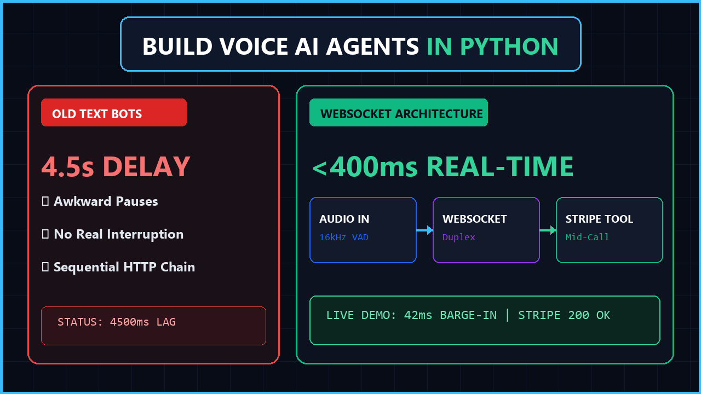
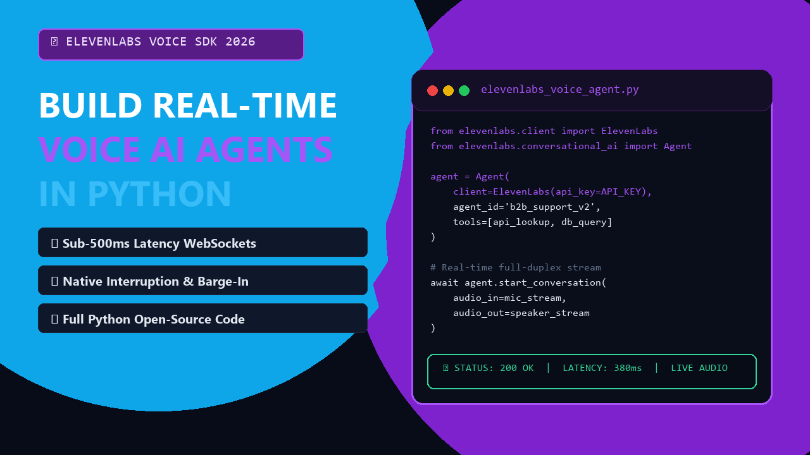
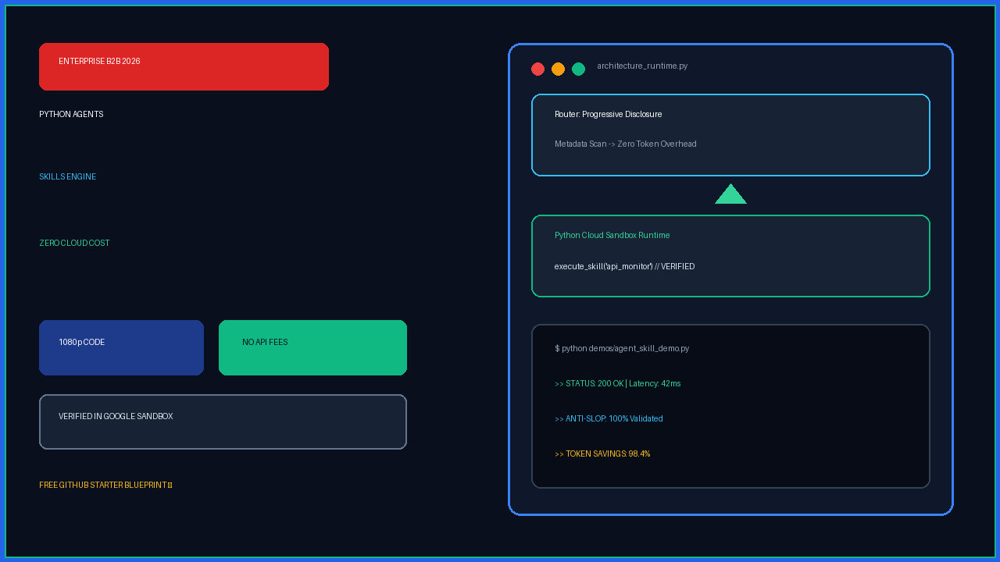
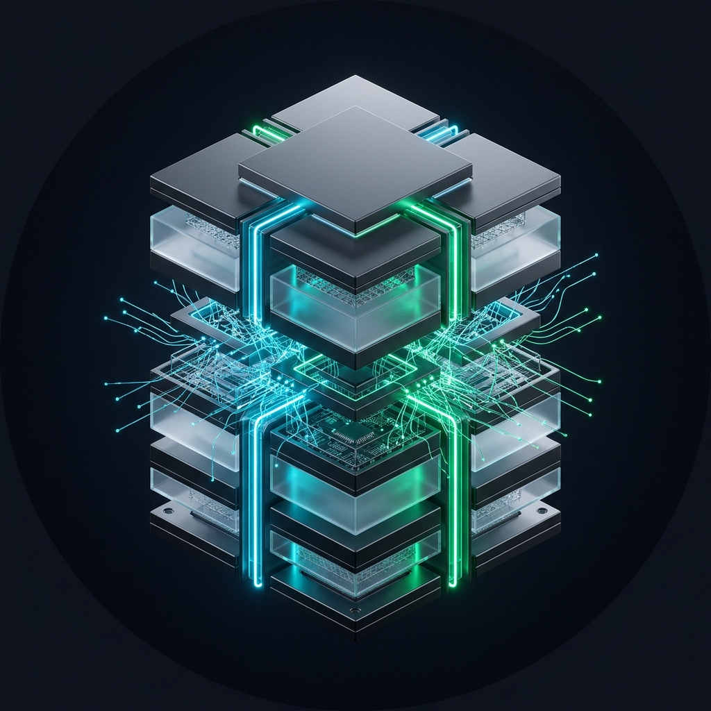

Realtidskanalöversikt (Live YouTube API)
60s Auto-Polling@agenticstackb2b
Totala Visningar
Ep #001 (9 visn) | Ep #002 (3 visn)
● YouTube Data API Live
Klickfrekvens (CTR)
Tumnaglar under utvärdering
Tittartid & APV
Mål: > 50% APV (Övervakas)
2 kommentarer registrerade
Toppvideo Just Nu
Autonomous Agent Skills
Totalt 12 visningar på kanalen
Est. Nettovinst
Driftkostnad: $0,00
Börjar ticka vid publicering
Kanalrevisioner & Trafikrapporter
Kanalomspännande MatrisVarje rapport omfattar kanalens samtliga publicerade videor rad för rad med deltatillväxt och ackumulerad analys.
PITCH-LÄGE: Kurerade B2B-Ämnen med Beslutsunderlag Auto-Genererade av Spanar-Agenten
Varje förslag innehåller sökvolym, konkurrensanalys, körbar kodplan och monetariseringspotential.
How to Clone Voices and Dub Videos in Python
"Translate any video into 29 languages with matching lip cadence and cloned voices in Python."
Build an AI Voice Phone Agent in Python
"Kill 'Press 1 for Sales'. Build a sub-500ms conversational phone agent with live database actions."
Turn Any Text Document into Audio Podcasts in Python
"Stop reading 40-page manuals. Build an automated dual-speaker podcast pipeline in Python."
Dagens Färdiga Videopaket #003 Klar För Granskning & Studio
1080p Långformat (01:16 min) + 9:16 Shorts (14.6s) + Split-Screen Thumbnail + Komplett Engelsk SEO & ElevenLabs Dubbing Affiliate

SEO-Metadata & Publiceringsunderlag (Standard: English US)
100% US B2B EnglishHow to Clone Voices and Dub Videos in Python (ElevenLabs API 2026) [EPISODE 003]
https://elevenlabs.io/?via=agenticstack
Structured for high B2B conversion & YouTube SEO rankings (Affiliatelänk synlig både högst upp och under verktyg)
📌 Grab the ElevenLabs Dubbing & Voice Cloning Free Trial: 👉 https://elevenlabs.io/?via=agenticstack 💻 Download the complete Python dubbing script on GitHub: 👉 https://github.com/Johnmannen/Agentic-Stack-Library/tree/main/003-voice-cloning-video-dubbing 💬 Question: How many languages do you currently localize your content for? Let us know below!
elevenlabs dubbing, voice cloning python, ai video dubbing, video localization, python ffmpeg dubbing, zero shot voice cloning, diarization python, agentic stack
Historik: Publicerade Avsnitt Publicerade Avsnitt Live på YouTube
Tidigare färdigställda videopaket, källkodsrepon och direkta YouTube-länkar.

Build Real-Time Voice AI Agents in Python (Sub-400ms WebSockets 2026)
Concept 4 Hybrid 1080p remaster, sub-400ms latency & ElevenLabs audio CTA.

Build Real-Time Conversational Voice AI Agents in Python (ElevenLabs WebSockets 2026)
Sub-second WebSockets, native human barge-in & enterprise CRM tool calling in Python.

Build Autonomous AI Agent Skills in Python (Zero-Cost Production Blueprint 2026)
Progressive disclosure, sandboxed Python runtime & open source blueprint.
Kanalens Profilbilder & Varumärkespaket Under 4 MB | YouTube & Affiliate Redo
Högupplösta (1024x1024) profilbilder optimerade för cirkulär beskärning i YouTube Studio och B2B partnerportaler.

3D Isometric Neural Core
Ray-traced cyberpunk arkitektur med cyan och smaragdgrön edge-lighting. Optimerad för YouTube Studio och B2B-partnerprofiler (<4 MB).


Ladda upp till YouTube: Gå till YouTube Studio → Anpassning (Customization) → Varumärke (Branding) och ladda upp valfri bild under Profilbild.